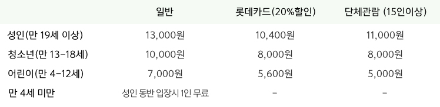
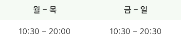

롯데뮤지엄은 서막을 여는 첫 번째 전시로
우리 시각문화에 새로운 변혁을 이끈
댄 플래빈 전시를 진행합니다.
신비한 빛이 가득한 댄 플래빈의 작품들을
롯데 뮤지엄에서 만나보세요!
위대한
신비로운 빛,
예술의
금기를 깨다.
롯데뮤지엄은 댄 플라빈의 초기 작품 14점을 선보이는 이번 전시를 통해
‘빛’이라는 새로운 소재가 공간으로 확장되는 실험과정을 함께 경험하고자 합니다.
시대의 변화를 먼저 자각하고 새로운 환경의 근간을 마련한 댄 플래빈의 ‘위대한 빛’을 통해
우리의 삶과 예술을 되돌아 보게 하는 깊은 성찰의 시간을 제공할 것입니다.
댄 플래빈, 그는 왜 ‘빛’을 선택했는가?
“사람들은 사실 이런 형광등의 빛이 예술이 될거라 생각치 못합니다.
하지만, ‘빛’은 당신이 보는 것과 같이 빛은 명료함과 꾸밈없는 순수함을
보여주며, 그 자체로 예술 작품이 될 수 있습니다.”
::
Dan flavin
누구도 상상하지 못했던 '형광등'
1933년 뉴욕에서 태어난 댄 플래빈은 1956년 미술사를 수학하고,
1961년 뉴욕에서 첫 번째 개인전을 엽니다. ‘아이콘icons’이라는 빛으로
부조 시리즈 작품들을 선보였고,이 작품을 시작으로 댄 플래빈은
누구도 상상하지 못했던 ‘형광등’을 사용하여 예술세계를 개척해 나갔습니다.
'미니멀리즘' 작가로서의 큰 성행
댄 플라빈은 1976년 시카고 현대미술관에서 대형 전시를 진행했으며
1969년 캐나다 네셔널 갤러리와 1989년 독일주립미술관에서 전시했습니다.
1982년에는 댄 플라빈 연구기관을 설립하고 뉴욕 브리지햄튼의 교회와 소방서에
댄 플라빈이 디자인한 작품을 영구 설치했습니다.
설치 공간에 따라 달라지는 '상황적' 예술
댄은 코너, 바닥, 벽 사이, 방 건너편, 창문 등에 작품을 설치하길 원했습니다.
댄 플래빈에게 빛은 페인트와도 같은 것입니다. 빛의 색과 그림자는 공간에 스며들고,
빛은 주변 공간을 변화시킵니다. 그래서 그의 예술은 ‘상황적’예술이라 불립니다.
::
Dan flavin

롯데뮤지엄은 그 서막을 여는 첫 번째 전시로 우리 시각문화에 새로운 변혁을 이끈 댄 플래빈 전시를 진행합니다.
댄 플래빈의 예술은 규격화된 산업재료로 복잡함을 제거하는 ‘미니멀리즘(Miminalism)’의 장르 안에서 설명될 수 있습니다.
그러나 그의 작품들은 함께 활동한 다른 작가들과는 확연히 구분됩니다. 플래빈의 독창성은 쉽게 구할 수 있는 형광등의 빛으로
공간을 변화시키는 새로운 작품을 창조했다는 것입니다.
예술계의 금기를 깬 ‘형광등’
예술계의 금기를 깨고 그가 선택한 형광등은
규격화되고 산업화된 사회를 반영함과 동시에
신비로운 빛으로 새로운 경험을 제공합니다.
빛을 통해 회화와 조각의 영역을 넘어
공간을 작품으로 전환시키는 그의 예술은
현대미술은 물론 음악, 건축, 삶의 방식에까지
혁명적인 의식의 전환을 가져왔습니다.
‘형광등’이라는 산업소재를 예술에 도입한 댄 플래빈의 혁신적 예술세계는 시대적 변화를 먼저 자각하고
새로운 시각문화의 근간을 마련한 작가의 예술적 궤적을 보여줍니다.
::
Dan flavin
롯데뮤지엄은 댄 플라빈의 초기 작품 14점을 한자리에
선보이는 이번 전시를 통해 빛이라는 새로운 소재가 공간으로
확장되는 실험과정을 함께 경험하고자 합니다.
또한 이번 전시는 시대의 변화를 먼저 자각하고 새로운 도시
환경의 근간을 마련한 댄 플래빈의 ‘위대한 빛’을 통해 우리의
삶과 예술을 되돌아 보게 하는 깊은 성찰의 시간을 제공할
것입니다.
빛과 그림자의
공간 존재감
빛을 발하는 이 형광등과 이것을 고정함으로써 형성되는 그림자는 단독으로 존재하기에 충분할 정도이다.
이 등에 적절한 장소를 찾아 줄 필요는 없었다. 이 등은 이미 스스로 내 작업실의 벽에 바로 드라마틱한 방식으로
제자리를 찾았기 때문이다. 빛을 발하면서 자신의 물적인 존재가 거의 보이지 않을 때까지 자신을 부인하는,
아른거리면서도 지속적인 형태의 그림이다.
관람 관련 정보를 알려드립니다.
티켓 가격

. 모든 할인의 중복 적용은 불가합니다.
. 만 4세 미만은 성인 동반시에 무료 입장이 가능하며 1인 초과시 어린이 요금이 적용됩니다.
. 롯데카드 결제시 1인 4매에 한하여 20% 할인 가능합니다.
영업 시간

. 입장은 관람종료 30분 이전까지만 가능합니다.
. 매일 정기 도슨트 투어를 진행합니다.(11시, 13시, 15시)
댄 플래빈은 자신의 작업을 영원한 것으로 생각하지 않았습니다.
수명이 끝난 형광등은 문서화되어 사라집니다.
이 작품은 형광등이 빛을 발할 때만 실존하는 것이니까요.
관람문의
1544-7744
lottemuseum@lotte.net